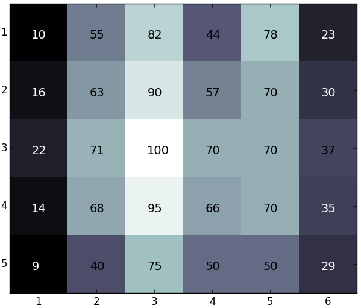
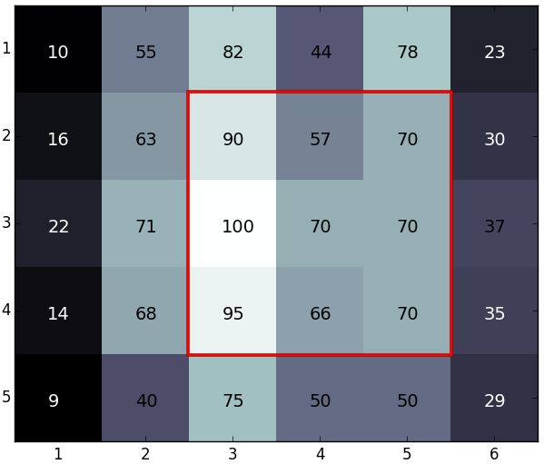

Boas novas, pessoal! O professor Farnsworth acabou de inventar um aparato que vai salvar os negócios! A invenção consiste em um transmissor de raios sugestores. Pessoas sob o efeito deste raio sentem uma enorme vontade de contratar os serviços da Planet Express, mesmo que (ainda) não tenha nada para enviar.
Infelizmente, o orçamento da empresa está muito apertado, então o professor possui verba para construir apenas um aparato. Porém, será suficiente, desde que ele seja capaz de encontrar um bom lugar para instalá-lo. Depois de muita pesquisa, determinou-se a densidade populacional da grande cidade de Nova Nova York. Por sorte, a cidade é bem planejada, então ela e suas quadras podem ser representadas através de uma matriz, onde cada posição corresponde a uma quadra na cidade. Os valores da matriz são números naturais correspondentes à quantidade de pessoas que vivem em cada quadra.
O que resta fazer é, com os dados de densidade populacional e o alcance da máquina em mãos, determinar o lugar para posicionar o aparelho, de forma que ele atinja a maior quantidade possível de pessoas.
O transmissor possui uma natureza tão estranha que seu alcance tem o formato de um quadrado, ao invés de um círculo, e deve ser posicionado no meio de uma quadra. Se o alcance da máquina for 0, apenas as pessoas na quadra onde ela for instalada sofrerão sugestão. Se o alcance for 1, a área afetada terá o formato de um quadrado 3 x 3, se o alcance for 2, a área afetada terá o formato de um quadrado 5 x 5, e assim por diante. O transmissor não afeta áreas fora da cidade.
Numa cidade com a população distribuída como abaixo e um transmissor com alcance 1, o posicionamento deve ser feito na linha 3 e na coluna 4, onde o raio afetará 688 pessoas, como mostrado abaixo:
|  | ► |  |
| # | Entrada | Saída |
| 1 | 5 6 1 10 55 82 44 78 23 16 63 90 57 70 30 22 71 100 70 70 37 14 68 95 66 70 35 9 40 75 50 50 29 |
688 |
| 2 | 4 5 1 10 9 8 7 6 10 11 12 13 14 3 5 2 8 1 10 10 11 10 10 |
82 |
| 3 | 3 4 1 1 1 1 1 3 3 2 2 0 1 0 0 |
12 |
| 4 | 6 7 2 1001 500 905 1300 455 889 400 960 1024 512 302 796 1536 1000 185 1560 1317 612 903 830 609 1331 754 1674 862 1337 1101 982 766 488 573 710 676 906 831 1167 1183 635 1461 1574 589 833 |
23915 |
| 5 | 5 6 0 10 55 82 44 78 23 16 63 90 57 70 30 22 71 100 70 70 37 14 68 95 66 70 35 9 40 75 50 50 29 |
100 |